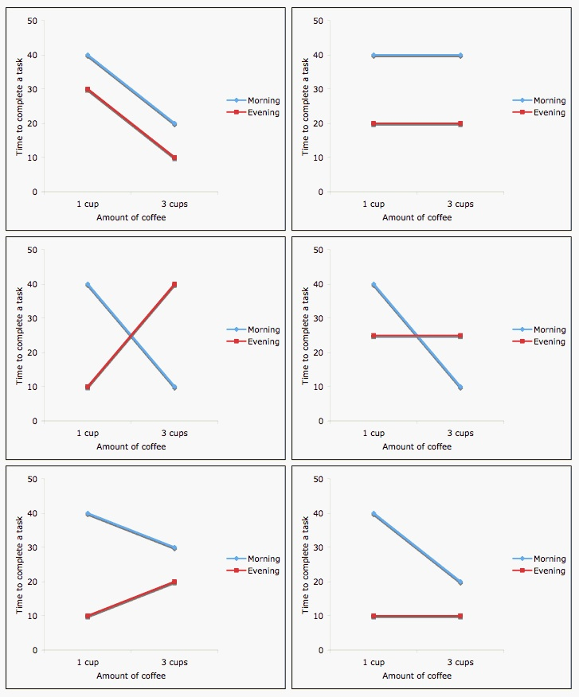

Session 1: Multiple linear regression review
Levi Waldron
session_lecture.RmdLearning objectives and outline
Learning objectives
- identify systematic and random components of a multiple linear regression model
- define terminology used in a multiple linear regression model
- define and explain the use of dummy variables
- interpret multiple linear regression coefficients for continuous and categorical variables
- use model formulae to multiple linear models
- define and interpret interactions between variables
- interpret ANOVA tables
Multiple Linear Regression
Systematic part of model
For more detail: Vittinghoff section 4.2
- is the expected value of given
- is the outcome, response, or dependent variable
- is the vector of predictors / independent variables
- are the individual predictors or independent variables
- are the regression coefficients
Random part of model
- is the value of predictor for observation
Assumption:
- Normal distribution
- Mean zero at every value of predictors
- Constant variance at every value of predictors
- Values that are statistically independent
Continuous predictors
- Coding: as-is, or may be scaled to unit variance (which results in adjusted regression coefficients)
-
Interpretation for linear regression: An increase
of one unit of the predictor results in this much difference in the
continuous outcome variable
- additive model
Binary predictors (2 levels)
- Coding: indicator or dummy variable (0-1 coding)
-
Interpretation for linear regression: the increase
or decrease in average outcome levels in the group coded “1”, compared
to the reference category (“0”)
- e.g.
- where x={ 1 if male, 0 if female }
Multilevel Categorical Predictors (Ordinal or Nominal)
- Coding: dummy variables for -level categorical variables *
- Interpretation for linear regression: as above, the comparisons are done with respect to the reference category
- Testing significance of multilevel categorical predictor: partial F-test, a.k.a. nested ANOVA
* STATA and R code dummy variables automatically, behind-the-scenes
Inference from multiple linear regression
- Coefficients are t-distributed when assumptions are correct
- Variance in the estimates of each coefficient can be calculated
- The t-test of the null hypothesis
and from confidence intervals tests whether
predicts
,
holding other predictors constant
- often used in causal inference to control for confounding: see section 4.4
Interaction (effect modification)
How is interaction / effect modification modeled?
Interaction is modeled as the product of two covariates:
What is interaction / effect modification?

Interaction between coffee and time of day on
performance
Image credit: http://personal.stevens.edu/~ysakamot/
Model formulae
What are model formulae?
- Model formulae are shortcuts to defining linear models in R
- Regression functions in R such as
aov(),lm(),glm(), andcoxph()all accept the “model formula” interface. - The formula determines the model that will be built (and tested) by the R procedure. The basic format is:
response variable ~ explanatory variables
- The tilde means “is modeled by” or “is modeled as a function of.”
Model formula for simple linear regression
y ~ x
- where “x” is the explanatory (independent) variable
- “y” is the response (dependent) variable.
Model formula for multiple linear regression
Additional explanatory variables would be added as follows:
y ~ x + z
Note that “+” does not have its usual meaning, which would be achieved by:
y ~ I(x + z)
Types of standard linear models
lm( y ~ u + v)u and v factors:
ANOVAu and v numeric: multiple
regression
one factor, one numeric: ANCOVA
Model formulae cheatsheet
| symbol | example | meaning |
|---|---|---|
| + | + x | include this variable |
| - | - x | delete this variable |
| : | x : z | include the interaction |
| * | x * z | include these variables and their interactions |
| / | x / z | nesting: include z nested within x |
| | | x | z | conditioning: include x given z |
| ^ | (u + v + w)^3 | include these variables and |
| all interactions up to three way | ||
| 1 | -1 | intercept: delete the intercept |